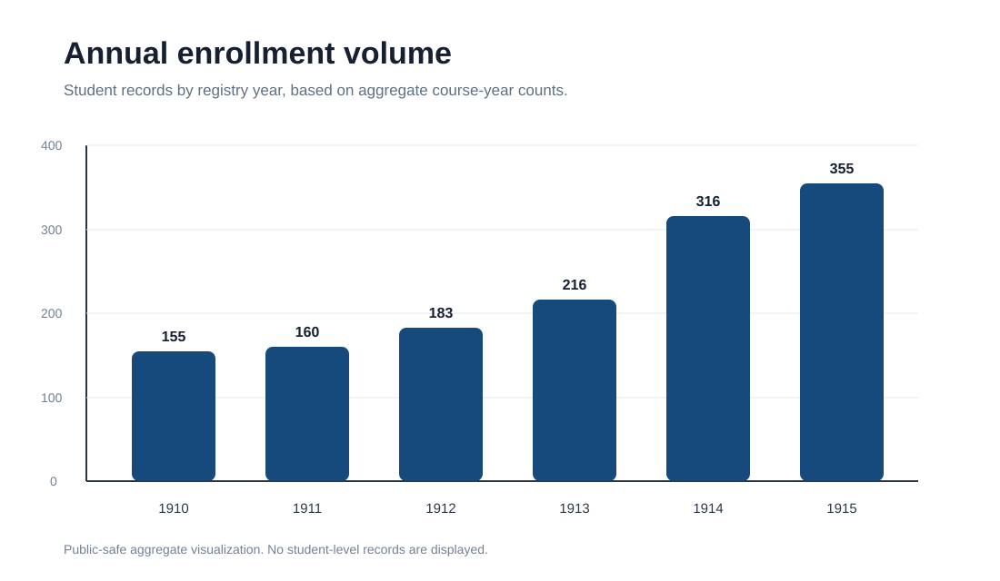
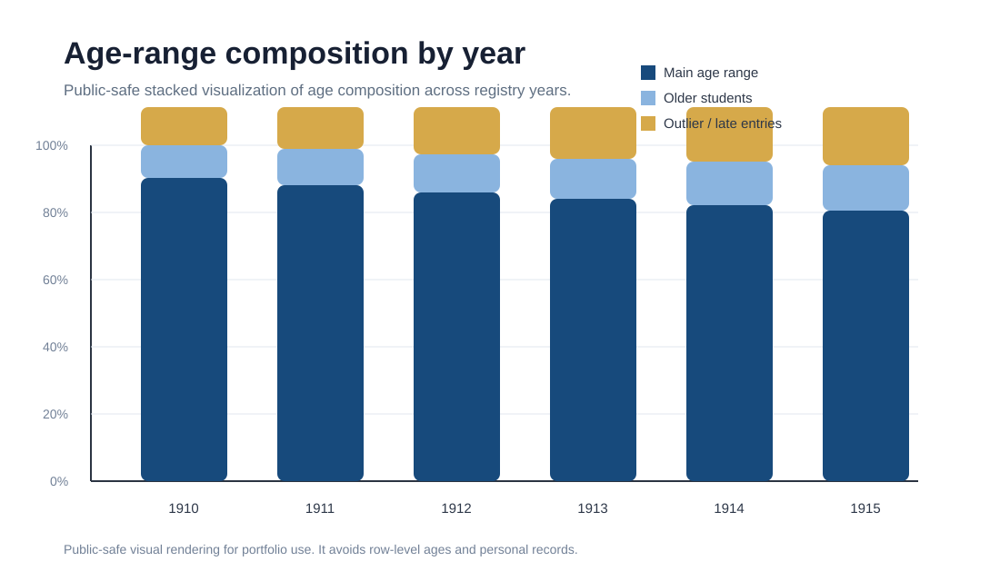
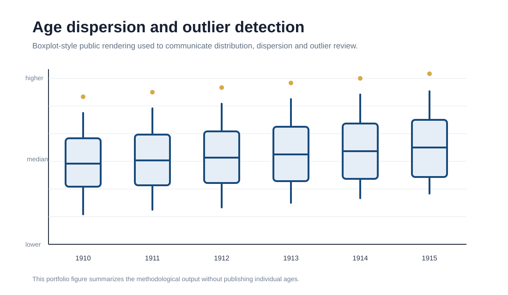
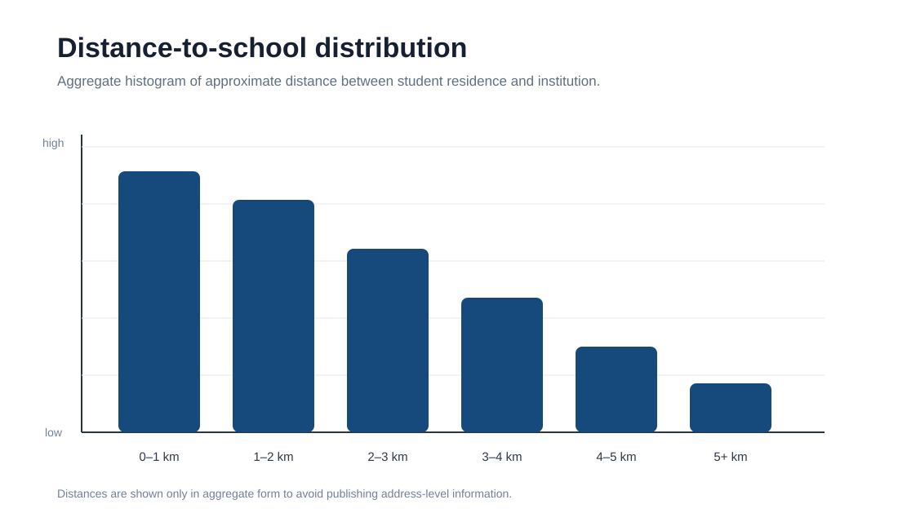
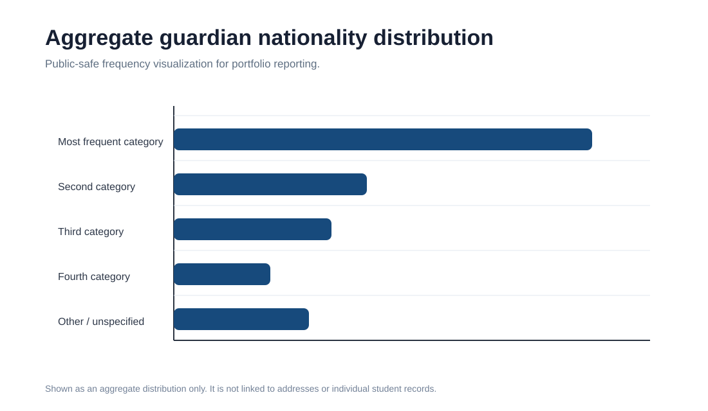

Annual enrollment volume
The annual enrollment chart provides a first view of institutional variation over time. It allows the analyst to detect changes in the number of registered students and identify periods of growth.

Portfolio Project · Educational Analytics · Python
A privacy-preserving analytical workflow for studying historical school enrollment records through quantitative, temporal and geospatial methods.
Overview
School enrollment records are often stored in fragmented spreadsheets. These files may contain inconsistent structures, historical variations in registration practices and sensitive student-level information. The analytical challenge is to extract meaningful patterns without exposing private data.
This project turns enrollment data into a structured analytical workflow: annual enrollment trends, age composition, course-level frequency tables, distance-to-school analysis and aggregate sociodemographic indicators.
Quantitative Analysis
The quantitative component studies how enrollment records vary across years, age groups and entry courses. The public version includes only aggregate visual outputs and public-safe renderings.
The annual enrollment chart provides a first view of institutional variation over time. It allows the analyst to detect changes in the number of registered students and identify periods of growth.

The stacked age-range visualization summarizes the internal age composition of enrollment records. This makes it possible to communicate whether the student population remains stable or changes structurally across years.

The boxplot-style figure explains the distributional logic used in the notebook: median comparison, variability and outlier review across registry years.

The course-year table condenses the entry course structure into a compact aggregate matrix. This is useful for identifying which course levels concentrate more enrollment records in each year.
| Year | 1º Año | 2º Año | 3º Año | 4º Año | 5º Año | 6º Año |
|---|---|---|---|---|---|---|
| 1910 | 44 | 22 | 21 | 12 | 35 | 21 |
| 1911 | 46 | 24 | 15 | 22 | 32 | 21 |
| 1912 | 67 | 30 | 21 | 14 | 38 | 13 |
| 1913 | 69 | 43 | 24 | 17 | 53 | 10 |
| 1914 | 126 | 45 | 45 | 19 | 66 | 15 |
| 1915 | 139 | 78 | 45 | 40 | 38 | 15 |
Geospatial Analysis
The geospatial component focuses on spatial patterns without publishing row-level addresses or exact identifiable locations.
The distance histogram summarizes how far students lived from the institution. This type of output can help describe the school’s territorial reach and the accessibility profile of its student population.

The guardian nationality chart is included only as an aggregate frequency distribution. It illustrates how sociodemographic attributes can be summarized without exposing individual records or linking categories to addresses.

Ethical and Privacy-Aware Publication
Original datasets are not published because they may contain names, addresses, family information and institutional records.
The public version prioritizes aggregate charts, summary tables and sanitized notebooks rather than row-level records.
Exact point maps and sensitive demographic categories should not be combined publicly without strong anonymization or aggregation.
Repository
The repository includes sanitized notebooks, documentation, aggregate tables and selected visual outputs.